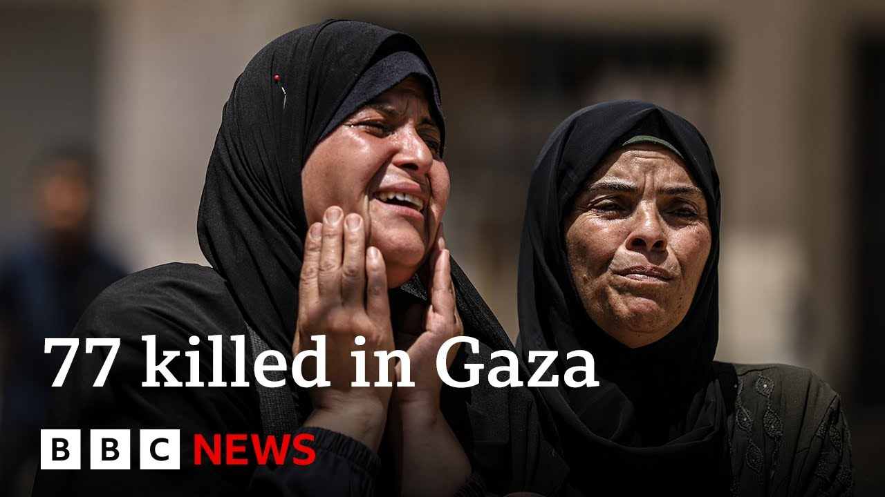

【加沙救援人员称以色列空袭造成77人死亡 | BBC新闻】
Summary: Breaking news from Gaza: Civil defense reports at least 77 killed in today's deadliest wave of Israeli airstrikes this week, including 23 near aid sites, with social media footage showing casualties, among them children.
摘要： 加沙突发新闻：民防部门称，以色列今日空袭造成至少77人死亡，为本周最致命袭击，包括23人在援助点附近遇难，社交媒体视频显示死者中有儿童。

⏱️ Estimated Reading Time: 7 min
📚 六级生词 📚 雅思生词 📚 托福生词 📚 专八生词 📚 SAT生词 📚 考研生词 📚 GRE生词 📚 高考生词
Well, let us start with that breaking news that I just read out in the headlines.
让我们从刚才标题中提到的突发新闻开始。
Breaking news from Gaza because the civil defense agency says Israeli forces have killed at least 77 people in the territory today in what has been described as the deadliest wave of Israeli air strikes on Gaza this week.
加沙突发新闻，民防机构称以色列部队今日在该地区造成至少77人死亡，被描述为本周对加沙最致命的空袭浪潮。
Those killed include 23 people near aid distribution sites.
死者中包括23名在援助分发点附近的人。
Videos circulating on social media show bodies lying on the ground, among them two children.
社交媒体流传的视频显示地上躺着尸体，其中包括两名儿童。
In Gaza City, the largest urban center in the Gaza Strip, Israeli war planes struck five separate locations, including a Hamas police center, two residential homes, and a school sheltering displaced families.
在加沙地带最大城市加沙城，以色列战机袭击了五个地点，包括一个哈马斯警察中心、两处住宅和一所收容流离失所家庭的学校。
Witnesses said that is coming from witnesses.
目击者称消息来自目击者。
We've had no comments so far from Israel.
我们尚未收到以色列方面的评论。
Let's speak to our Gaza correspondent Rushi Abu Alu and Rushi tell us a little more in terms of what you are hearing has happened on the ground.
让我们连线加沙记者鲁希·阿布·阿卢，鲁希请简要介绍你听到的地面情况。
Yeah, very intense Israeli air strike started early morning with bombing about five houses in Jabalia town in in the north where about 14 15 people were killed and many others were missing under the building according to the Hamas control civil defense agency.
是的，清晨以色列猛烈空袭轰炸了北部贾巴利亚镇约五栋房屋，哈马斯控制的民防机构称约14至15人死亡，多人被埋在建筑下。
Straight away after that, Gaza City, the biggest city in the entire of Gaza Strip, has witnessed about 10 12 air strikes.
紧接着，加沙地带最大城市加沙城遭遇约10至12次空袭。
very unusual number of air strike for for about a week.
这一周内空袭次数极不寻常。
We have seen less intense Israeli air strike following the escalation with Iran.
与伊朗局势升级后，以色列空袭曾有所减弱。
But today is is completely different in Sha refugee camp, the beach camp west of of Gaza is a very crowded area.
但今天沙难民营（加沙西部的海滩营地）情况完全不同，该区域非常拥挤。
Most of the people who were evacuated from the north following the Israeli operation were taking shelters in that camp.
以色列行动后从北部撤离的大多数人都在该营地避难。
about 23 people were killed, many other were injured.
约23人死亡，多人受伤。
I have seen a video shared by like activists in the in the place showing bodies in the ground including a girl and a boy at least were shown in the videos.
我看到当地活动人士分享的视频显示地上有尸体，至少包括一名女孩和男孩。
The hospitals are overwhelmed by the number of injuries and air strikes is everywhere.
医院因伤者数量不堪重负，空袭无处不在。
I mean people described it to me just now in Gaza City as if the war has just started.
加沙城民众刚才向我描述称，感觉战争刚刚开始。
Has there been any response from the IDF, the Israeli authorities?
以色列国防军或当局有何回应？
Well, I haven't seen any comment yet, but you know, uh uh some of the local resident and local activists in Gaza linked this to uh sudden you know deployed of Hamas police.
我尚未看到任何评论，但当地居民和活动人士将此与哈马斯警察突然部署联系起来。
Some of them in civilian uniform, some of them in masked in the street.
部分警察穿便服，部分蒙面出现在街头。
They try to regain control taking the leverage of Israeli busy with the Iran now.
他们试图趁以色列忙于伊朗事务时重新控制局势。
And the number of Israeli drones that is monitoring Gaza day and night, they are significantly less than before the escalation with Iran.
而日夜监视加沙的以色列无人机数量较与伊朗局势升级前明显减少。
So Hamas is trying to, you know, regain its control of of wide areas because for the last like two, three months, Israel was bombing any sort of Hamas police units or any Hamas militants trying to regain control.
因此哈马斯正试图重新控制大片区域，因为过去两三个月以色列一直在轰炸任何试图重新掌控的哈马斯警察或武装人员。
So they try to regain the control in in Gaza.
他们正试图重新控制加沙。
Some of the people linked the latest big Israeli strikes to this.
部分人将以色列最新大规模空袭与此关联。
As we said in the introduction uh included in those numbers apparently 23 people near an aid distribution site only yesterday Philipe Lazarini the head of the UN agency for Palestinian refugees and has said it is now routine I'm reading a quote directly it is now the routine to shoot and kill desperate and starving people while they try to collect food there is alarm certainly from the UN and other agencies just the normalization now about these incidents so close to the aid distribution side.
如开头所述，死者中包括23名在援助点附近的人。联合国近东救济工程处主任菲利普·拉扎里尼昨日称，射杀绝望饥饿的领粮者已成常态，联合国等机构对此类事件频发拉响警报。
Yes.
是的。
Because simply what is happening is that every day trucks coming from Israeli side, Israeli control border and as soon as they come off the crossings close to the Israeli troops, thousands of people, thousands of hungry people would rush to take any food from this.
因为每天来自以色列控制边境的卡车刚通过以军附近的检查站，成千上万饥饿民众就会冲上去抢粮。
In the south it's a it's a it's a little bit better because there is four or five centers to distributing food but these area are also under Israeli control in Rafa and in in Kunis and the killing of people near centers has became a daily routine.
南部稍好，因有四五个配粮中心，但这些位于拉法和汗尤尼斯的区域也受以方控制，中心附近的杀戮已成日常。
Every day we have people killed.
每天都有人死亡。
Yesterday there was 12 13 in Gaza.
昨日加沙有12至13人遇难。
The day before was the biggest about 50 51 were killed and the Hamas run civil defense agency said more than 40 450 people so far killed within the last two weeks just people hungry trying to get food.
前日最严重，约50至51人死亡。哈马斯民防机构称过去两周已有超450人因饥饿抢粮丧生。
Rushi we will leave it there.
鲁希，我们先到这里。
We will return if there are any more details.
如有更多细节我们将继续报道。
Thanks very much for the latest on that breaking development.
非常感谢提供这一突发事件的最新消息。